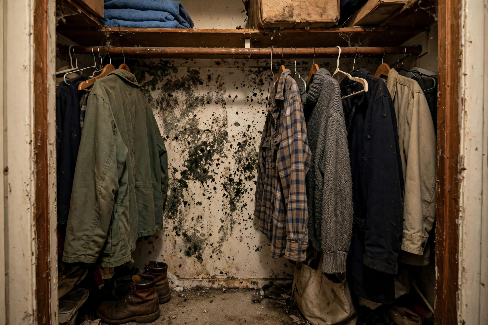

Closet Mold, Gone for Good
That musty wardrobe smell has a cause — usually a cold exterior wall plus trapped air. We clean it and fix the conditions behind it.

Smell something in the wardrobe?
A quick visit identifies the cause and the fix — usually simpler than people expect.
Open 24 hours · Serving Caldwell and Canyon County
Why Caldwell closets are prone to it
Exterior-wall placement
Many older Caldwell bedrooms put closets against north or east exterior walls — the coldest surfaces in the house, where condensation forms first.
Thin insulation
Mid-century walls often have minimal insulation in closet bays. The wall surface runs several degrees colder than the room, inviting moisture.
Blocked airflow
Floor-to-ceiling storage stops air circulation. Stagnant, humid air against a cold wall is the classic closet-mold recipe.
Nearby bathrooms
Closets sharing a wall with a bathroom catch steam through gaps. Without a vent fan running, that moisture settles into stored fabrics.
A homeowner finds speckling on winter coats stored in a guest-room closet all summer. The closet sits on an uninsulated exterior wall, and the room's vent was closed for months. Cleaning plus leaving the vent open and the door ajar keeps it from returning.
Sources: EPA — Mold, Moisture & Your Home · CDC — Mold
Check your closets for these signs
- A musty or earthy smell when you open the door
- Dark spotting on the back wall or along baseboards
- Clothes or shoes feeling damp to the touch
- White or gray fuzz on leather goods and boxes
- Condensation on the wall in cold months
Keeping closets mold-free afterward
Leave breathing room
Keep stored items a few inches off the back wall. Air needs to circulate behind boxes and hanging clothes.
Watch the humidity
A small hygrometer in a problem closet tells you when relative humidity climbs. Above 60% for days is the warning zone.
Fix the wall, not just the air
If the closet sits on an uninsulated exterior wall, adding insulation or a vapor-smart wall covering addresses the cold surface itself.
Seasonal check
Peek behind stored items each fall and spring. Catching early spotting takes minutes; ignoring it takes remediation.
Questions, answered plainly
Why does mold grow in closets?
Closets on exterior walls get cold, and warm indoor air condenses on those cold surfaces. Add stored clothes blocking airflow and you have a perfect microclimate for growth.
Can I just throw away the moldy clothes?
Washable items can often be laundered. Porous items that stayed damp a long time may need to go. We help you sort what is salvageable during the visit.
Will opening the closet door fix it?
Airflow helps, but if the wall behind stays cold and damp, growth returns. The lasting fix usually combines cleaning with addressing insulation or ventilation.
Is closet mold dangerous?
The CDC notes that mold exposure can irritate eyes, skin, nose, and throat, with stronger effects for people with asthma or mold allergies. Small closet patches still deserve prompt attention.
Do you clean the clothes too?
We focus on the closet structure — walls, shelving, and airflow. We advise on laundering or discarding affected textiles, and can recommend local cleaners if needed.
Other hidden spots worth checking
Closet mold rarely travels alone. While we are there, these nearby areas get a quick look.
Behind the dresser
Furniture against exterior walls traps the same cold, still air as closets. A quick pull-away reveals early spotting.
Under the bed
Low airflow under bed frames lets humidity settle, especially in rooms with the vent closed.
Window sills
Condensation on older single-pane windows drips into sills and feeds growth in the track and surrounding drywall.